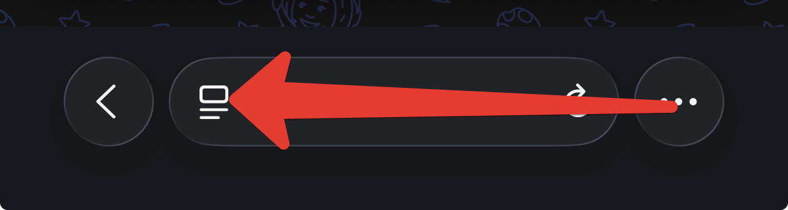
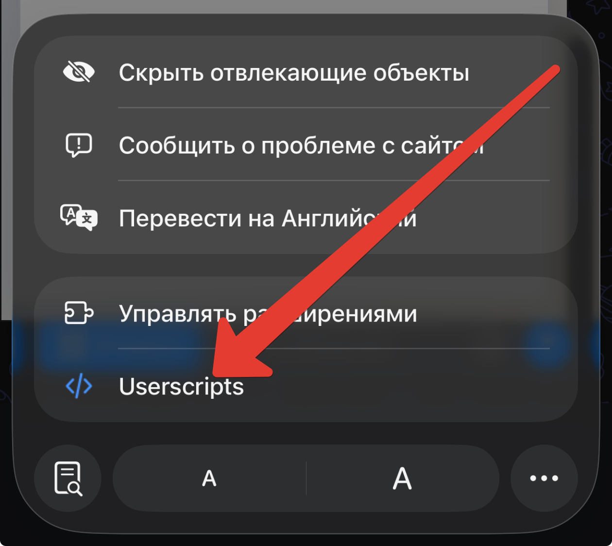
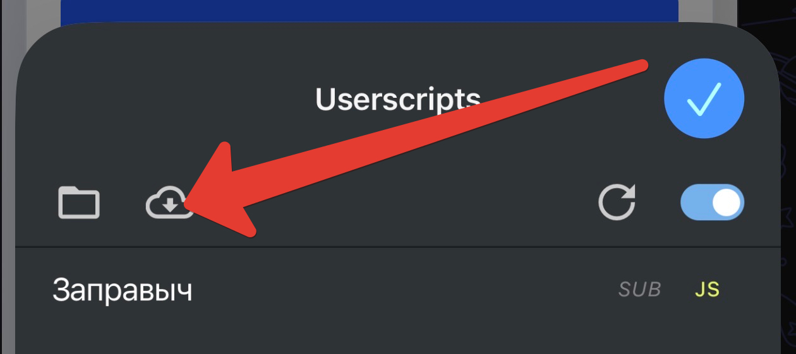
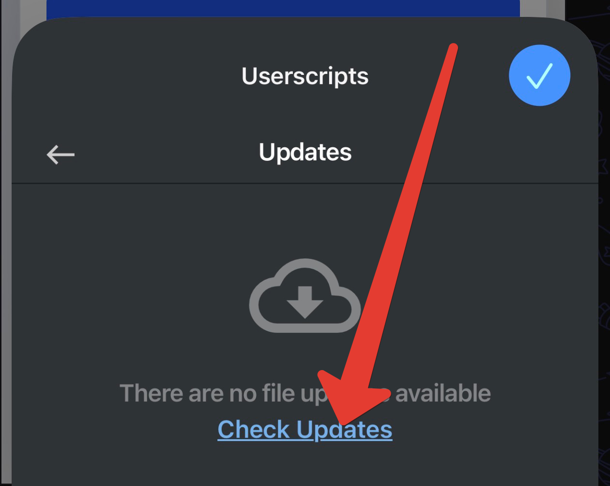
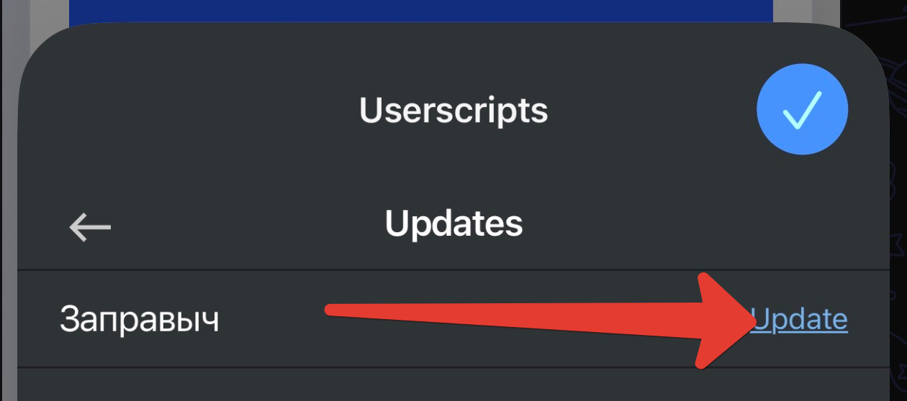

Когда выходит новая версия — обновись, это быстро. Бот подскажет, когда пора.
1 Открой меню расширений
В Safari тапни значок настроек страницы — слева в адресной строке.

Значок настроек страницы в Safari
2 Выбери Userscripts
В открывшемся меню нажми Userscripts.

Выбери «Userscripts» в меню
3 Открой «Обновления»
В окне Userscripts нажми значок облака ☁️ (вверху слева).

Нажми значок облака ☁️ (обновления)
4 Проверь обновления
Нажми «Check Updates» — Userscripts проверит, есть ли свежая версия.

Нажми «Check Updates»
5 Обнови «Заправыч»
Появится Заправыч с кнопкой «Update» — тапни её.

У «Заправыч» нажми «Update»
✅ Готово! Закрой меню (синяя галочка) и переоткрой миниапп — версия обновится. В боте придёт «▶️ Скрипт запущен» с новой версией.